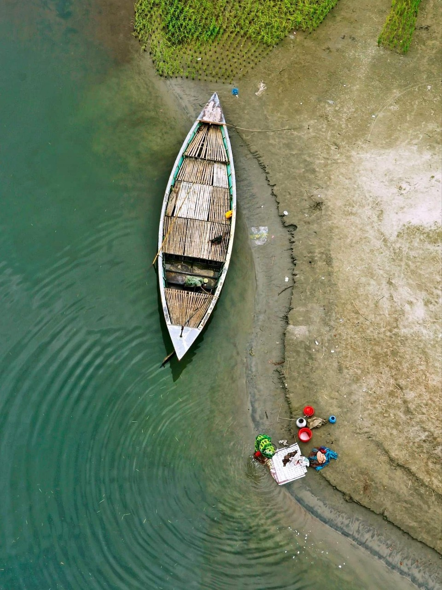

Assalamualaikum,
My name is Foyzullah.
I live in Bangladesh.
My country is very beautiful except politics.
here are some information about my country.
The name of my nation is Bangladesh. Bangladesh is a little nation with a sizable population. It is a South Asian nation that is moderately developed. We have a thriving economy that is growing. It is 147,570 square kilometres in size. But there are 164 million people living there. More than the area, that.
Yet, the nation is still quite picturesque and tranquil. People of Bangladesh are really amicable with each other. This nation's history of independence is illustrious. After a bloody battle involving nine mothers, we gained our freedom from Pakistan in 1971. In that genocide, more than 3 million Bangladeshis gave their lives.
Nonetheless, we were still able to achieve our freedom. After gaining its freedom, the nation experienced several hardships. Yet, it does so quite well. One of the nicest places to live in South Asia right now is Bangladesh. There are so many stunning places to see in this nation.
We have Cox's Bazaar, which is the world's longest sea beach. One of the largest mangrove forests in the world and a fantastic source of beauty is the Sundarban. There is a Royal Bengal Tiger to be found. I have a great passion for my nation. Being born here is such a blessing.
There are talking birds, game birds, prey birds, water birds, guest birds; weaving birds and beautiful birds in Bangladesh they add charm and beauty to the flora and fauna of our country. The Doel is our national bird. Bangladesh is called the land of rivers with their uncounted tributaries. These rivers contribute much to add the natural beauty of Bangladesh. The Padma, the Meghna, the Jamuna and the Karnafuli are the big rivers of Bangladesh. They provide us with a great variety of heart-torching and eye-catching sights, sounds and beauty.
Education and culture: education is the backbone of the nation. Most of the people of our country are illiterate. They are ignorant of their rights and duties. The darkness of illiteracy has created a great obstacle to the way of our development. People of Bangladesh are simple and gentle. They have strong feelings of love, affection and hospitality. Our mother tongue is bangla. Bengali literature is very much developed. Our world poet Rabindranath Tagore, rebel poet kazi nazrul islam and pollikabi jasimuddin are the outstanding poets of Bengali literature. Md. Nazrul Islam is our national poet.